As in any sport, the sporting equipment forms the basis for your success. For sport shooting with an air rifle, it is important to make sure that the settings of the rifle can be individually adjusted to you. In order to adjust the rifle to your needs, it is very helpful to have a second person look at your stand from the outside and take photos for adjustment. At school and youth level, you can also shoot three-position disciplines with the air rifle. In this case, you should make sure that the conversion is as simple and quick as possible. Be sure to make a note of the conversion settings in the shoot report master data function so that you always have them at hand.
The high-end air rifle model "800 X" from Feinwerkbau is considered an all-rounder rifle in terms of settings for the shooter. In terms of shooting performance, quality, functionality and design, this match rifle is in the absolute top class. Visually, the 800 X corresponds to the typically distinctive Feinwerkbau line with its shapely design.
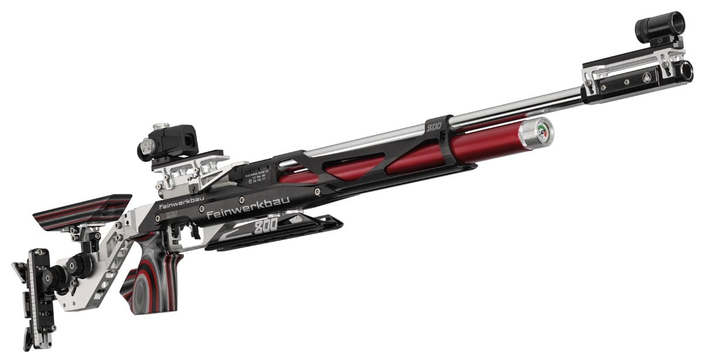In addition to the classic aluminium stock variant of the air rifle, there are also models with a solid wood stock. For example, the "800 W Hybrid" model from Feinwerkbau. The wooden stock is made of ergonomically shaped solid walnut. In addition to the many adjustment possibilities, the model 800 W Hybrid also offers the advantage of being able to participate in shooting on a rest and freehand disciplines without lengthy conversion.
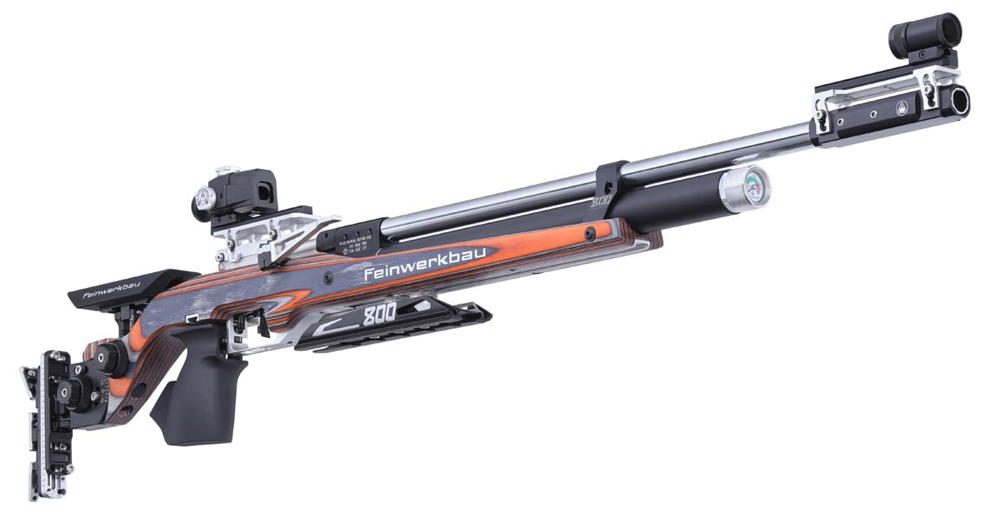The "800 Evolution TOP" model from Feinwerkbau is considered an excellent youth rifle. With the 4X4 Varo sight raiser block, the sights can be effortlessly ergonomically adjusted to the constantly changing head position. The universal design and the right-left grip offer many advantages, especially when working with junior shooters.
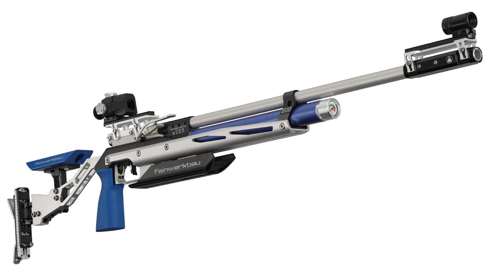As in any sport, the sporting equipment forms the basis for your success. For sport shooting with a small bore rifle, it is important that the settings of the rifle can be individually adapted to you. Because of the three-position disciplines, you should make sure that the conversion is as simple and quick as possible. Be sure to make a note of the conversion settings in the shoot report master data function so that you always have them to hand. In order to adjust the rifle to your needs, it is very helpful to have a second person look at your stand from the outside and take photos for comparison.
In the field of small-bore match rifles, one model in particular is recommended: "Alu 2800" from Feinwerkbau. With its aluminium stock, the small-bore rifle "2800 Alu" offers you many adjustment options so that you can quickly and easily adapt the rifle to your needs. With the damper you can adjust the shooting behaviour even more to your needs. In addition, the loading window of the revolutionary precision bolt has been moved significantly to the rear to create even more comfort for the shooter, which is a significant advantage for three-position combat.
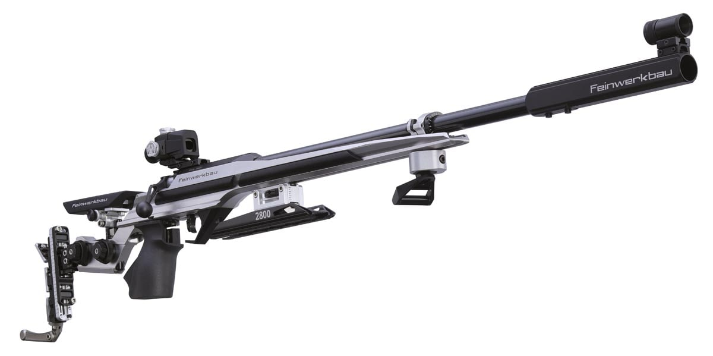Feinwerkbau has developed the "2800 Alu X-Change" model variant especially for the requirements of dynamic three-position combat. With a quick-release fastener, the rear stock unit with grip, cheek piece and butt plate can be detached in one piece. When changing the shooting position, another unit with correspondingly preset stock components can be mounted in a flash and the preparation time in the final can be used for more test shots.
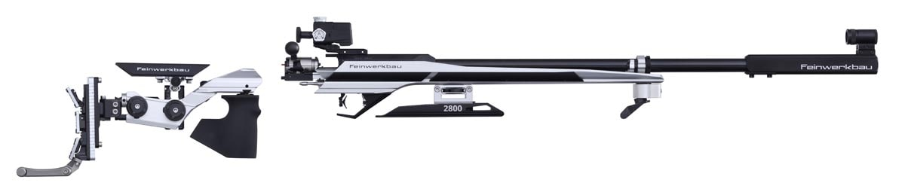In addition to the classic aluminium stock variant of the small-bore rifle, there are also particularly recommendable full-wood stock models on the market. For example, the "2800 W" model from Feinwerkbau. This is available with a shaft made of walnut or high-quality plywood. With its many adjustment options, the wooden stock is not only a visual highlight on the market. With this model variant, too, you can influence the shooting behaviour via the damper and adjust it individually. In addition, the bolt of the revolutionary precision breech has been moved significantly backwards to create even more comfort for the shooter.
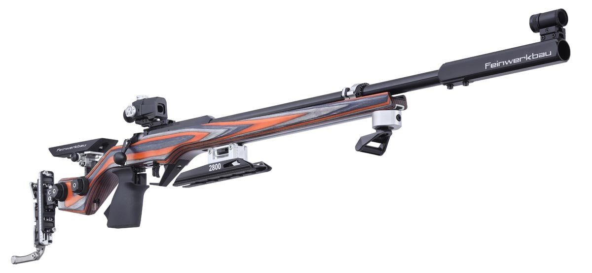In addition to purchasing a new small-bore rifle, there is the possibility of upgrading your system with an interchangeable stock. Upgrading your stock often offers you many possibilities in your individual settings with your usual system. When choosing your rifle stock, make sure that you can adjust all settings individually and that you feel comfortable with the new stock. Be sure to make a note of the conversion settings in the shoot report master data function so that you always have them to hand.
The rifle interchangeable stock "TEC-HRO fanatic" from TEC-HRO is particularly suitable, to quickly make different adjustments between the shooting positions, e.g. in three-position combat. The possibility of integrating almost any system into this stock by means of vibration-damping adapters offers enormous added value compared to conventional stocks.
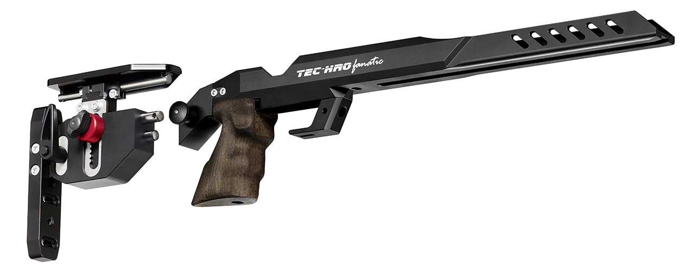With your ideal sports equipment you should use optimal conditions at the shooting range. In addition to good lighting, the shooting range is a key factor here. Whether you use a target pull system or an electronic system with digital score display, setting up on the target is an important step in your process.
Modern shooting systems with digital score displays offer you as a shooter an absolute added value. Only a short time after firing, you can see your precisely evaluated shot on your tablet or monitor in tenths of a second. This is helpful if you want to immediately compare your feeling at the moment of firing with the result you have achieved in order to get into a "flow" or if you want to carry out stop corrections. However, pay attention to your post-target phase with every shot. You should do this very carefully, especially with a digital scoreboard.
Also in competition, the systems, with the extrapolation function and the visualisation on the shooting range and in the guest room, offer a lot of fun and exciting moments for you and all your audience. For training, both in the youth and adult sector, electronic systems offer interesting variants of fun targets, which are excellently suited as a change to mirror training and make club events an absolute highlight.
The "OpticScore" system from DISAG offers you the fastest possible, precise and reliable evaluations in the field of non-contact, optical shot detection. With the light of numerous infrared light-emitting diodes and a specially developed lens, a measuring light curtain is created that is invisible to your eye. The bullet is detected and registered by two high-speed sensors when it passes through the measuring light curtain. Certified by the DSB for its precision and functionality, this system for distances of 10 (rifle/pistol), 15 (Zimmerstutzen) or 50 meters (rifle) is thus ideally suited for shooting sports according to the most modern standards.
Many other features such as target image changer, integrated traffic light system and multi-coloured LED illumination are also available. With many different fun and lucky targets, DISAG offers you an absolute novelty on the market for shooting systems with digital hit display.
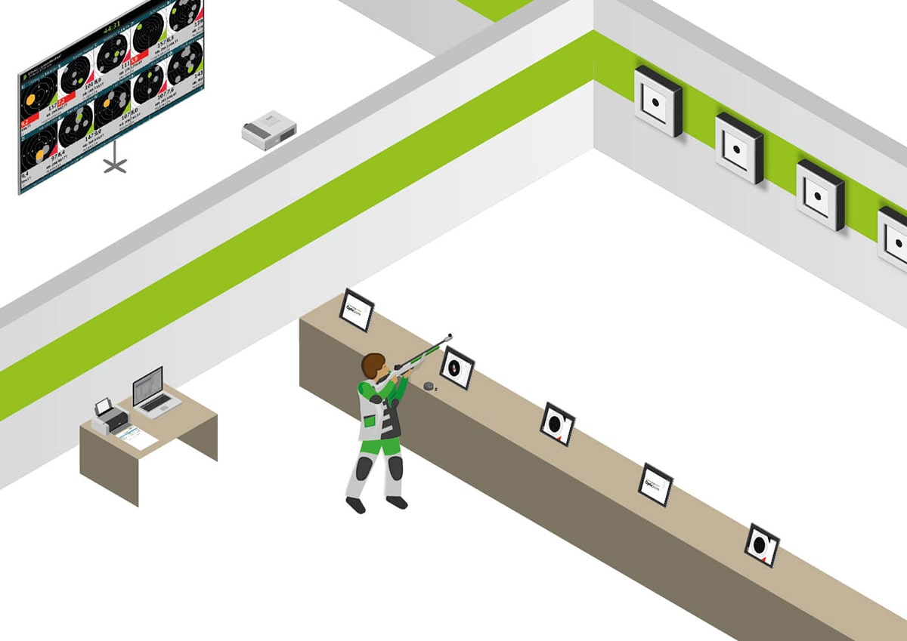 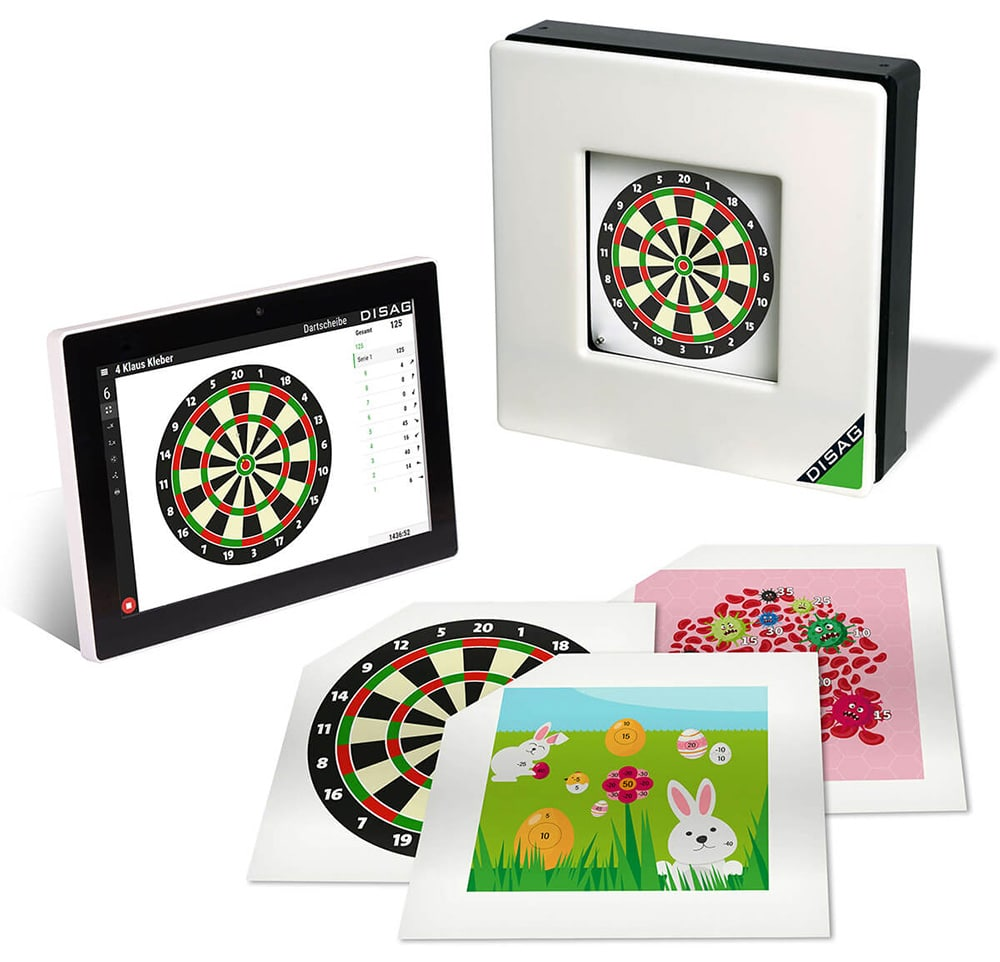To gain initial experience in sport shooting, there is the possibility of light shooting. The special feature: children under the age of 12 are allowed to train with the light rifle without special permission. Since all the movements are the same as in sport shooting with the air rifle, this is a great added value for the youngsters - and not only for shooting clubs.
With a unique laser technology, the manufacturer Feinwerkbau offers a simulator rifle for light shooting for all sport shooters under the age of 12. In an aluminium or beech stock, suitable for both right-handed and left-handed shooters, the simulator from Feinwerkbau offers many adjustment options to introduce children and young people to the sport in the best possible way. No compromises were made in the components used - for example, the full match trigger. Especially when working with young people, it is very important to train with high-quality components right from the start.
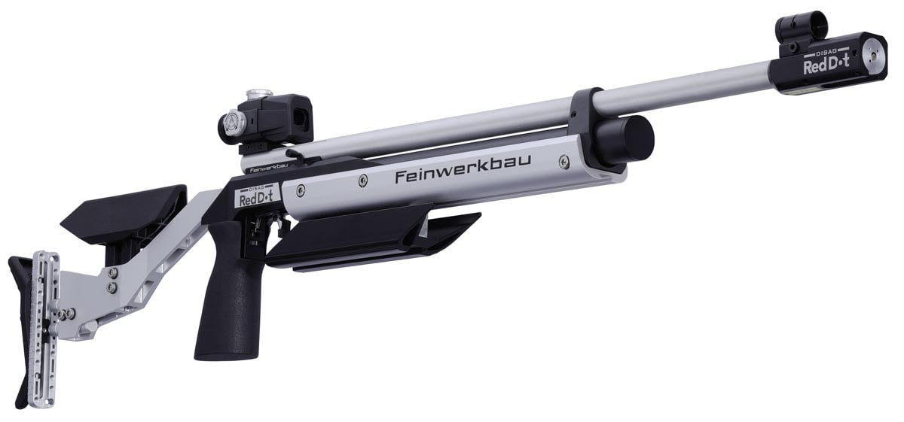 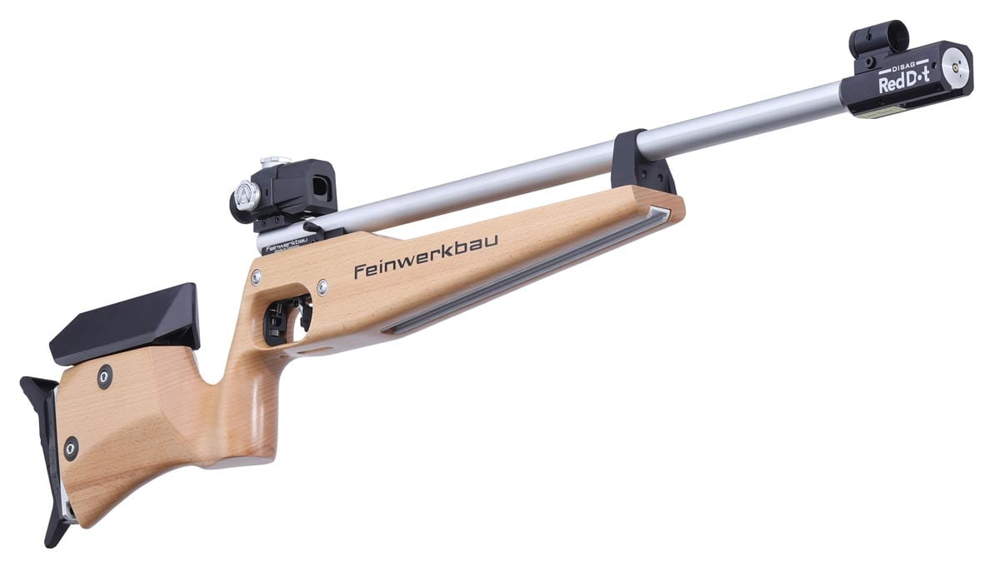As in any sport, the sporting equipment forms the basis for your success. For sport shooting with an air pistol, make sure that the pistol grip fits snugly in the palm of your hand and that no interfering contours press into your palm. It should also be easy to adjust to the width of your hand. It should be possible to adjust the front and rear sights on the barrel axis and to adjust the width of the rear sight. In addition, it is helpful to have predefined points for attaching additional weights, such as barrel weights and weight bars.
One of the most precise air pistols on the market is currently the "P8X" model from Feinwerkbau. Thanks to its anatomically shaped 3D walnut or plywood grip with adjustable hand rest, you can optimally adjust the air pistol to the width of your hand. In addition, there is a coarse and fine adjustment of the rear sight size, the infinitely variable length adjustment of the sighting line as well as the possibility to position sliding weights individually on the sporting weapon.
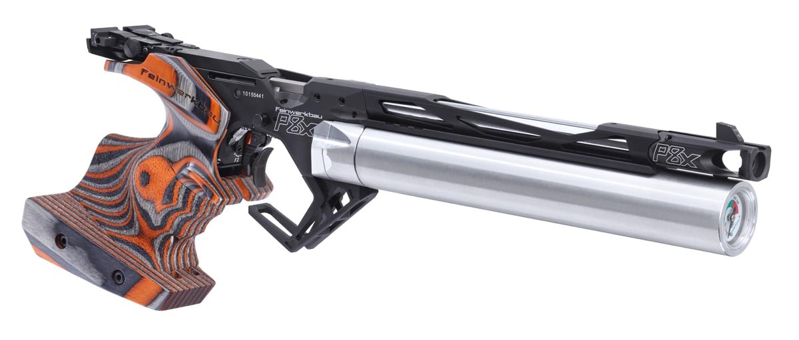As in any sport, the sporting equipment forms the basis for your success. When shooting with a small-bore pistol, make sure that the pistol grip fits snugly in the palm of your hand and that no interfering contours press into your palm. It should also be easily adjustable to the width of your hand. It should be possible to adjust the width of the rear sight. Furthermore, the weight of the small-calibre pistol should not cause you pain during longer training sessions.
One of the most solid small-bore pistols on the market is currently the "AW93" model from Feinwerkbau. Especially the considerably reduced recoil, which is due to the recoil of the mass balancing system and the use of a special damper element, inspires sport shooters all over the world. In addition, Feinwerkbau offers this pistol in a lighter aluminium locking housing, which is approx. 100g lighter and offers considerable added value in terms of weight distribution.
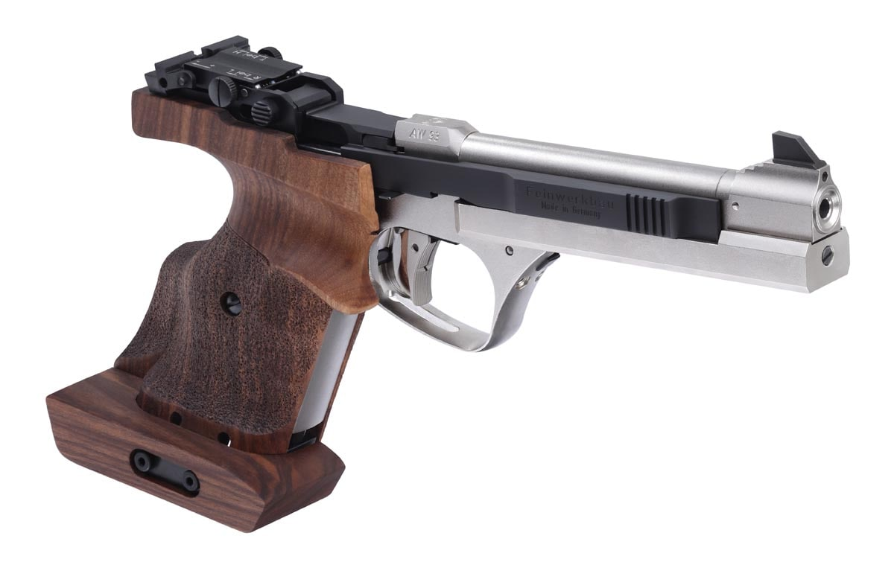With your ideal sports equipment you should use optimal conditions at the shooting range. In addition to good lighting, the shooting range is a key factor here. Whether you use a target pull system or an electronic system with digital score display, setting up on the target is an important step in your process.
Modern shooting systems with digital score displays offer you as a shooter an absolute added value. Only a short time after firing, you can see your precisely evaluated shot on your tablet or monitor in tenths of a second. This is helpful if you want to immediately compare your feeling at the moment of firing with the result you have achieved in order to get into a "flow" or if you want to carry out stop corrections. However, pay attention to your post-target phase with every shot. You should do this very carefully, especially with a digital scoreboard.
Also in competition, the systems, with the extrapolation function and the visualisation on the shooting range and in the guest room, offer a lot of fun and exciting moments for you and all your audience. For training, both in the youth and adult sector, electronic systems offer interesting variants of fun targets, which are excellently suited as a change to mirror training and make club events an absolute highlight.
The "OpticScore" system from DISAG offers you the fastest possible, precise and reliable evaluations in the field of non-contact, optical shot detection. With the light of numerous infrared light-emitting diodes and a specially developed lens, a measuring light curtain is created that is invisible to your eye. The bullet is detected and registered by two high-speed sensors when it passes through the measuring light curtain. This makes this system ideal for distances of 10, 15 or 50 metres.
Many other features such as target image changer, integrated traffic light system and multi-coloured LED illumination are also available. With many different fun and lucky targets, DISAG offers you an absolute novelty on the market for shooting systems with digital hit display.
To gain initial experience in sport shooting, there is the possibility of light shooting. The special feature: children under the age of 12 are allowed to train with the light rifle without special permission. Since all the movements are the same as in sport shooting with the air pistol, this is a great added value for the youngsters - and not only for shooting clubs.
With a unique laser technology, the manufacturer Feinwerkbau offers a simulator pistol for light shooting for all sport shooters under the age of 12. The light pistol is suitable for both right-handed and left-handed shooters and offers many setting options to introduce children to the sport in the best possible way. No compromises have been made in the components used. Especially when working with young people, it is important to train with high-quality components right from the start - for example, a full-fledged match trigger was built into this light pistol.
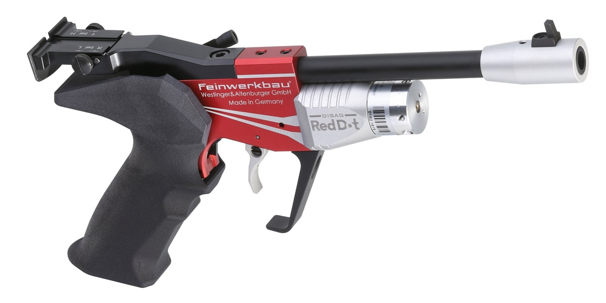